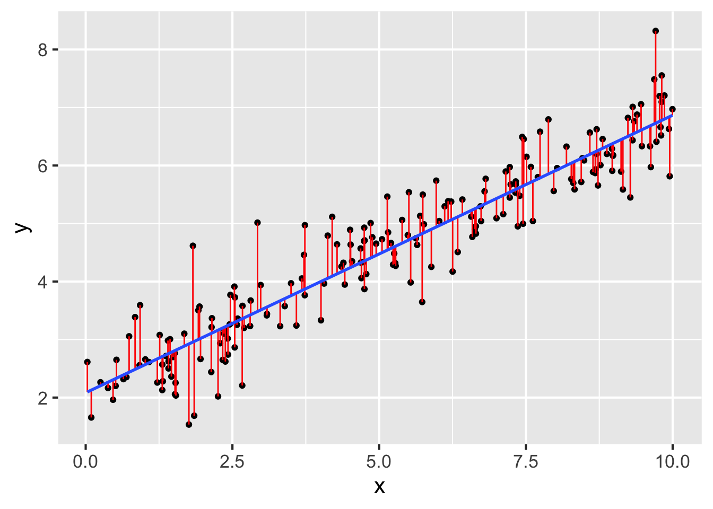
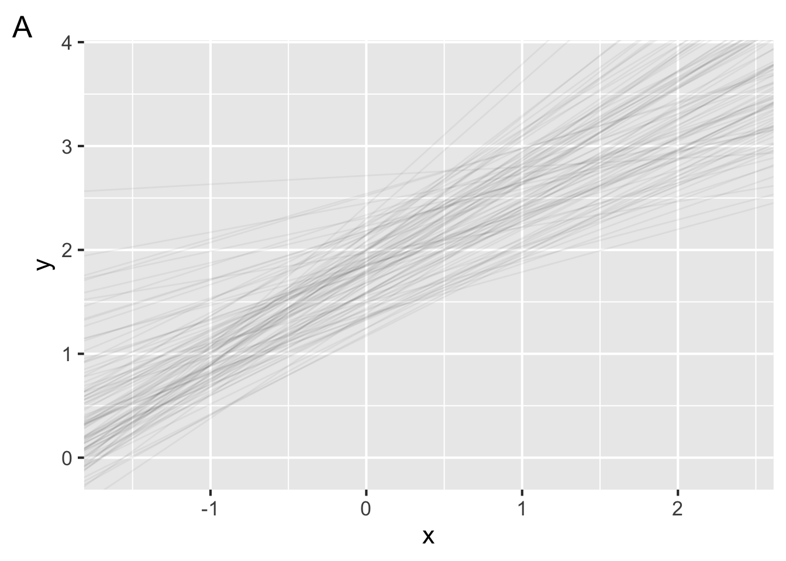
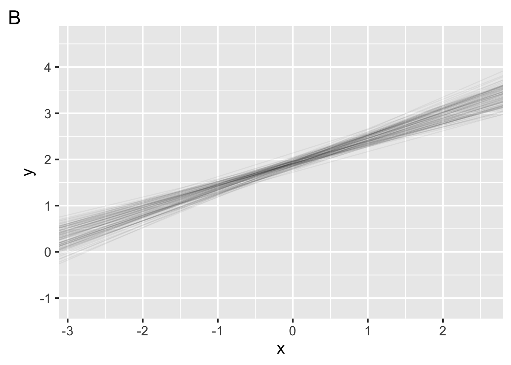

Lab 7: Model evaluation
Not graded, just practice
1 Model accuracy
Question 13 refers to the following figure:
- In the figure above, which of the following corresponds to the residuals?
- Suppose the \(R^2\) value on the model in the figure above is about 0.88. Given this value, which of the following best describes the accuracy of the model?
- Suppose 0.88 reflects the \(R^2\) for our fitted model on our sample. Which of the following is true about the \(R^2\) for our fitted model on the population?
- Which of the following best describes an overfit model?
- How can we estimate \(R^2\) on the population? Choose all that apply.
- Fill in the blanks below to best describe cross validation:
- Leave some out
- Fit a model on the data
- Evaluate the mdoel on the data
2 Model accuracy in R
Questions 19-20 refer to the following code and output:
model <- lm(y ~ 1 + x, data)
summary(model)
Call:
lm(formula = y ~ 1 + x, data = data)
Residuals:
Min 1Q Median 3Q Max
-1.38959 -0.32626 -0.04605 0.31967 1.65977
Coefficients:
Estimate Std. Error t value Pr(>|t|)
(Intercept) 2.08280 0.07418 28.08 <2e-16 ***
x 0.47844 0.01242 38.51 <2e-16 ***
---
Signif. codes: 0 '***' 0.001 '**' 0.01 '*' 0.05 '.' 0.1 ' ' 1
Residual standard error: 0.5139 on 198 degrees of freedom
Multiple R-squared: 0.8822, Adjusted R-squared: 0.8816
F-statistic: 1483 on 1 and 198 DF, p-value: < 2.2e-16- What is the \(R^2\) value for the model fit above?
- Does the value you entered in 19 reflect \(R^2\) on the population or on the sample?
Questions 21-23 refer to the following code and output:
# we divide the data into v folds for cross-validation
set.seed(2)
splits <- vfold_cv(data)
# model secification
model_spec <-
linear_reg() %>%
set_engine(engine = "lm")
# add a workflow
our_workflow <-
workflow() %>%
add_model(model_spec) %>%
add_formula(y ~ x)
# fit models to our folds
fitted_models <-
fit_resamples(
object = our_workflow,
resamples = splits
)
fitted_models %>%
collect_metrics()# A tibble: 2 × 6
.metric .estimator mean n std_err .config
<chr> <chr> <dbl> <int> <dbl> <chr>
1 rmse standard 0.507 10 0.0397 pre0_mod0_post0
2 rsq standard 0.890 10 0.0146 pre0_mod0_post0- In the cross-validation performed above, how many folds were the data split into?
- What \(R^2\) do we estimate for the population?
- What model has been fit?
Questions 24-26 refer to the following code and output:
# we bootstrap the data for cross-validation
set.seed(2)
bootstrap <- bootstraps(data)
# fit models to our folds
fitted_models_boot <-
fit_resamples(
object = our_workflow,
resamples = bootstrap
)
fitted_models_boot %>%
collect_metrics()# A tibble: 2 × 6
.metric .estimator mean n std_err .config
<chr> <chr> <dbl> <int> <dbl> <chr>
1 rmse standard 0.507 25 0.00946 pre0_mod0_post0
2 rsq standard 0.887 25 0.00377 pre0_mod0_post0- How many bootstrap samples did we generate?
- True or false, we fit the same model to the bootstrap data as we did in the cross-validation code.
- True or false, the \(R^2\) estimated by bootstrapping is equal to the \(R^2\) estimated by cross-validation.
3 Model reliability
- As we collect more data, our parameter estimates
- Each figure below plots 100 bootstrapped models with data drawn from the same population. In one figure, the model is fit to 10 data points. In the other, each model is fit to 200 data points. Which figure shows the model fit to 200 data points?


- As we collect more data, what happens to the confidence interval around our parameter estimates?
- True or false, we can obtain confidence intervals around parameter estimates for models in the same we we did for point estimates like the mean.
- Model reliability asks how certain we can be about our parameter estimates. Why is there uncertainty around our parameter estimates?
answer
"Because we are interested in the model parameters that
best describe the population from which the sample was
drawn. Due to sampling error, we can expect some
variability in the model parameters."- The figure below shows the model fit for a sample of 10 participants. Suppose we repeated our experiment with 10 new participants. True or false, fitting the same model to these new data would yield approximately the same parameter estimates.
- True or false, a model with high accuracy must also have high reliability.